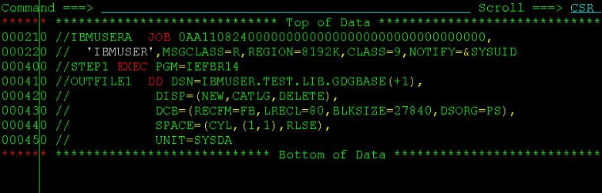

用ISRSUPC在PDS所有member中搜索指定字符串
在一个PDS中搜索名字叫做“snailgo”的member，可以在command line上输入命令mem snailgo即可。但是，如果想搜索整个PDS下所有的成员(Member)中指定字符串，有没有办法呢？答案是肯定的，我们可以用一个比较的utility ISRSUPC来实现，同样的，只需submit一个JCL。

这里，我们在PDS “IBMUSER.TEST.LIB.JCL”和“IBMUSER.TEST.LIB.PROC”下的所有member中搜索字符串”SNAILGO”。参数为：PARM=(SRCHCMP,ANYC)，其中SRCHCMP指定要搜索的字符串，ANYC表示ANY Case，即搜索任何符合的情况，要了解更详细的PARM的用法，可以参考IBM红宝书IBM manual ISPF/PDF Guide ...
comments
Read More
新建空的GDG generation
有时候你不希望GDG的当前generation里面有数据，但GDG又不能没有generation,否则JCL会提示找不到dataset。这时候你可以用IBM的IEFBR14utility来生成一个空的generation。IEFBR14它实际上什么也不做的空程序，常常被我们用来生成空的FILE。不只是gdg，普通的dataset也可以生成。

submit，查看，空的generation G0001V00 就生成了:

comments
Read More
更改GDG世代数参数
建完GDG base后更改GDG的generation。用下面的JCL提交即可。这里我将上次建的GDG base “IBMUSER.TEST.LIB.GDGBASE” 的世代数更改为5:

submit即可。 最后，你可以在GDG base前面用命令“LISTC GDG ENT(/) ALL”来检查看看是不是参数已经从10改成5了。
comments
Read More
新建GDG世代数据集
如何新建一个GDG base? 一种方法是用IDCAMS utility来建,只需提交一个JCL即可。看图：

其中，LIMIT(10)指定了生成GDG 的世代数(generation number)，简单吧！
comments
Read More
IBM主机技术一本通笔记
这一系列文章将会是从《IBM主机技术一本通》里面选取我个人认为对我有用的部分来记录和阐述。
1、LRECL和BLKSIZE

LRECL:逻辑记录是程序想要处理的一个数据单元，通常由许多连接在一起的区域构成。
BLKSIZE：物理单元(又称块) 描述了在一次输入输出操作中需要传送的数据量，如上图所示，你一定发现了BLKSIZE必须是LRECL的整数倍，显然这是因为BLKSIZE是多个LRECL嘛！
任何时候发生输入输出时传送的是整个块而不是单个逻辑记录，这样做的好处显而易见，有效地使用空间，提高传送率。
2、I——PDS(分区数据集)信息分析
一直对这个知识点一知半解的，今天看了一本通之后，算是明白了。照着图说：
呃... 存储介质：标准磁盘；卷名：PRIM03；设备：3390；组织结构：PO(分区数据集)，固定记录长度，记录长度80字节，块大小27920字节，首次分配1 track，用完后每次可扩展分配195个tracks，当前已经分配了2个track，一共分配了1次，最多可以有10个目录块，即最多可以有10x4=40个member，当前已经使用了2个tracks ...
comments
Read More
IBM主机技术一本通笔记续
1、JCL每行80列
原来这是因为在1960年那个年代，程序员使用的是穿孔卡片来将JCL作业控制语句一个一个的输入系统，构成了批量作业，而当时穿孔卡片只有80列。
2、JOB语句的关键字参数
ADDRSPC
REGION
MSGCLASS
SECLABEL
PASSWORD
BYTES
CLASS
RD MSGLEVEL
TIME
PERFORM PAGES
COND
LINES
CARDS
TYPRUN
PRTY
SCHENV
GROUP
RESTART
NOTIFY
USER CCSID
标有颜色的几个是我自己比较常用到的。
上张包含了这9个常用JCL关键字参数的图(当然，平常工作当中一般不可能在单个JCL当中都包含了所有的这9个关键字，我这里只是为了更好的说明才把它们罗列在一个JCL里面的，这点要明白)
!
CLASS : 是作业运行队列的优先级，MSGCLASS是作业输出信息的级别，它规定了作业输出信息送往哪里显示。CLASS和MSGCLASS都是公司规定好了的，肯定有文档可以查看具体信息的。
NOTIFY: 是指最终作业运行的结果通知给谁，可以写详细的ID，比如IBMUSER，也可以写通用的参数，比如&SYSUID ...
comments
Read More
CICS应用编程接口
开发语言
可以用COBOL,C,C++,Assembler,PL/I等来编写CICS应用程序的主要的大部分逻辑处理功能，而只有少数的一部分功能需要用到CICS命令。
CICS命令格式
EXEC CICS SEND FROM (MSG-AREA) LENGTH(5) END-EXEC ——向终端发送长度为5的MSG-AREA信息
EXEC CICS READ FILE('FILEA') INTO (CUSTOMER-REC) RIDFLD(CUSTOMER-NUM) ——读和修改VSAM文件
EXEC SQL SELECT colum_names INTO program_variables From Table_name WHERE ... END-EXEC ——读和修改关系型数据库
EXEC CICS READ ... RESP(RESPONSE-FIELD) 或 EXEC CICS HANDLE CONDITION ——处理异常条件 ...
comments
Read More
ISPF中通配符%和*的使用
在日常的操作过程中，发现通配符__%和__使用的场合还是很多的，而且重要的是，如果使用好的话，真的是会很大程度上提高工作效率的。
和其他系统的通配符没什么区别，在大机上也是这么定义的：
_%：任意一位字符
*__：任意一至多位字符
下面举两个例子：
输入：IBMUSER.TEST.LIB%

输入：IBMUSER.*.LIB

当然，两者可以根据你的需要任意组合使用，这个是没问题的。就像：IBMUSER.*.LIB%这样。
comments
Read More
OLTP和CICS
OLTP:联机事务处理
事务的ACID属性：
- 原子性(Atomicity)
- 一致性(Consistency)
- 孤立性(Isolation)
- 持久性(Durability)
关于OLTP的完整性和可恢复机制,这里举两种情况:
a)、 某人从ATM取200块钱，ATM向银行的主机递交请求(主机存储着客户的账户信息)，主机批准且从该人账户上扣去200元，此时ATM发生故障不工作了，此人没拿到钱。
b)、 某人从ATM取200块钱，ATM向主机递交请求，主机批准并且从客户帐上减去200元，ATM付200元给此人，此时主机保存取款记录的磁盘坏了，取款信息丢失。
此类问题层出不穷，增加了程序员代码逻辑处理的难度。我们需要一个环境，它能自动处理事务处理中所有可能的失败，使应用开发人员可以集中于商务的应用开发，而不必编写失败处理程序，不必关心通信和硬件等引起的问题。再来看一个问题：
c)、 航班订票，如果有两个客户在先后时间都要预定某一航班的同一座位，如何避免同一座位被售两次？
通过锁住记录的方法，使得第二个请求必须等待第一个请求完成，而此时，该座位已经变成已预订状态，自然不会被再次预定。
各大公司相应地采用事务管理器，如IBM公司的CICS和IMS,EBA Systems的TUXEDO，DEC的ACMS，Transara的Encina灯来实现这些功能 ...
comments
Read More
QW命令——MVS/QuickRef帮助文档
大机平台上有一个很了不起的帮助文档系统，名字叫做MVS/QuickRef，是一款强大的在线查询系统。用过微软的MSDN的童鞋都知道MSDN的强大。大机上面的MVS/QuickRef几乎可以查到所有你想查的资料，因为这款查询工具号称超过5k万行，以简单易懂著称。最主要的是查询特别方便，使用ISPF直接调用命令QW即可查询内容。
MVS/QuickRef现在最新的版本是2011年4月份新出的MVS/QuickRef 7.4 ，我们公司还在用的是7.0的版本。这款强大的查询工具是由一家名叫Chicago-Soft的公司生产的，主页在:MVS/QuickRef主页，可以去看看。
在大机上，MVS/QuickRef能查询许多方面的。这是官网上关于MVS/QuickRef强大的一段文字描述：
"MVS/QuickRef's simple, easy to understand information helps you resolve 97% of the problems affecting z/OS, CICS, DB/2, IDMS ...
comments
Read More
{kind=link}